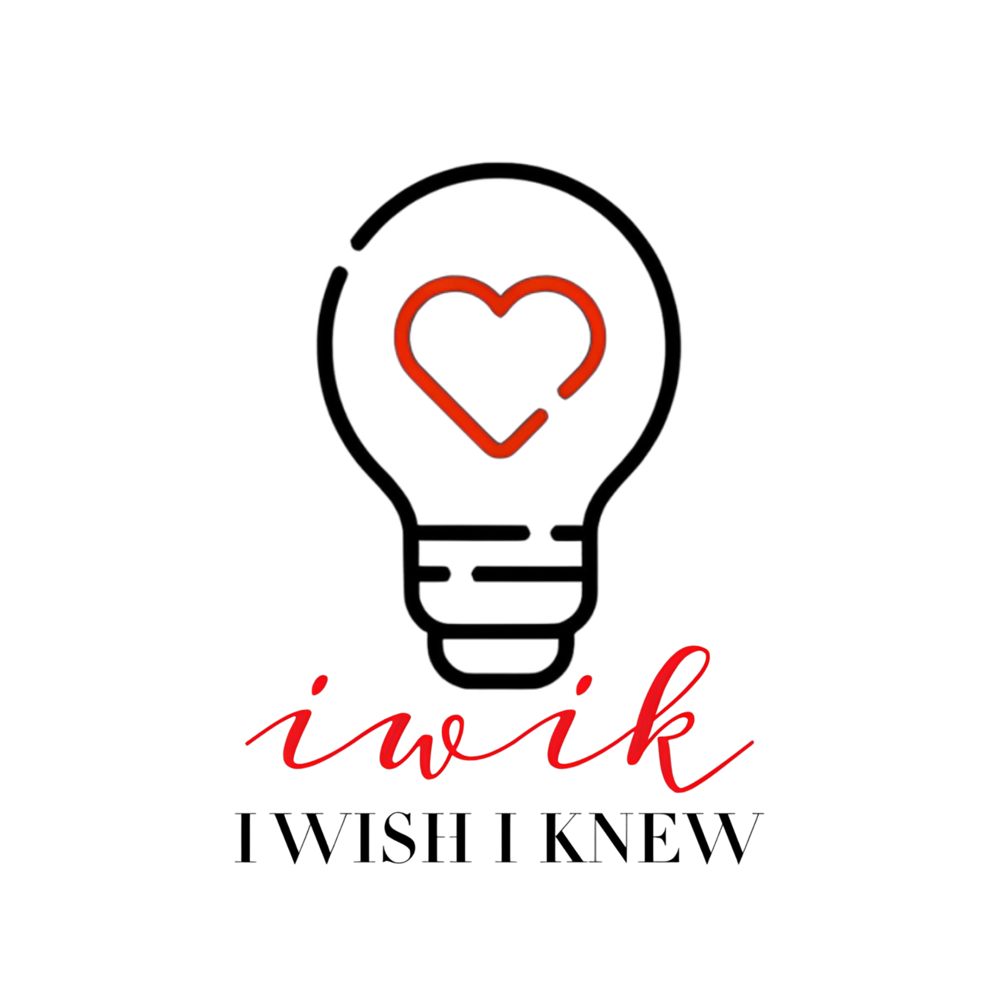

I Wish I Knew is a philanthropic charity that exists to create and support projects that provide
knowledge, resources, and meaningful assistance to those who can benefit from them.
Through our work, we hope to empower individuals, inspire communities,
and create greater capacity and desire to help others,
ultimately generating a ripple effect that contributes to a better world for everyone.
To turn this mission into lasting community impact, I Wish I Knew structures its operations around the development and execution of targeted charitable projects across three key pillars:
Note: As an organization, we coordinate our community outreach and administrative initiatives directly through our formal corporate channels and official web presence rather than consumer social media networks.